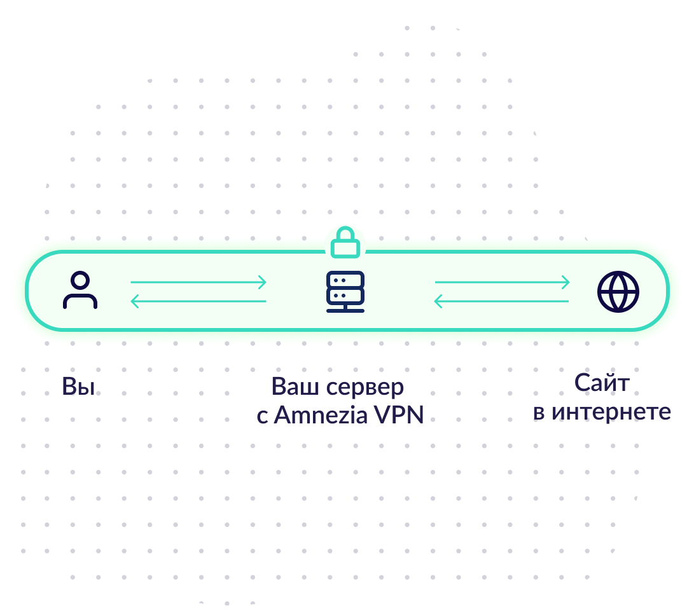
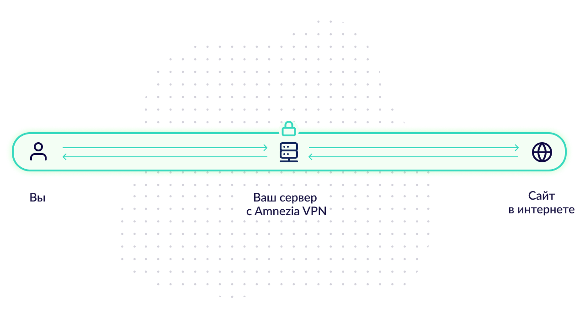
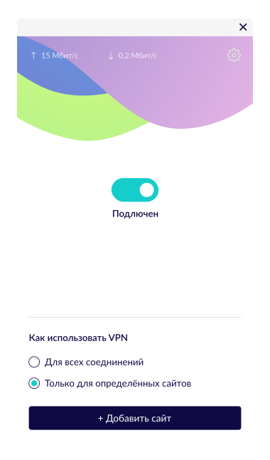
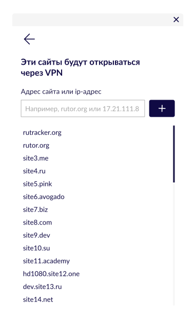

Ваш персональный приватный VPN
Бесплатный сервис для создания личного VPN на вашем сервере. Помогает получать доступ к заблокированному контенту, не раскрывая конфиденциальность даже провайдерам VPN.
Обычные VPN знают о вас всё
С обычным VPN ваши действия в интернете недоступны для вашего интернет-провайдера, киберпреступников или спецслужб, но доступны сервису, где вы купили VPN.
Более того, бесплатные VPN могут продавать ваши данные третьим лицам: пароли, историю посещённых сайтов и т.п.


С Amnezia вы сами-себе провайдер VPN
Amnezia VPN это бесплатное приложение с открытым исходным кодом (Github) для создания вашего собственного VPN на вашем сервере. Ваши данные принадлежат только вам. Вы оплачиваете только свой собственный сервер, который контролируете.
Для доступа к заблокированным сайтам
Позволяет открывать через VPN только отдельные сайты. Так вы сможете использовать более простой и дешевый сервер и не снижать скорость работы с большинством сайтов.
И для шифрования всех соединений, если нужна полная приватность
Для нас ваша приватность — приоритет. Приложение не собирает и не передаёт никакой статистики, логов и другой информации о пользователях и их данных.


Вам не потребуется опыт работы с сервером или консолью
Укажите лишь адрес, логин и пароль от вашего сервера. Если у вас его нет, мы порекомендуем, где его купить и как получить данные для входа

Технические подробности
Поддерживаеме протоколы
Настройка серверной части
Отличие от OpenVPN, ShadowSocks и WireGuard